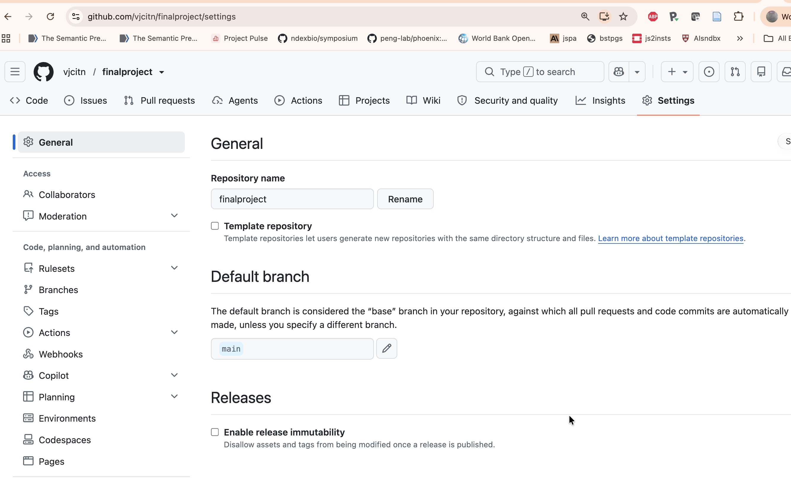
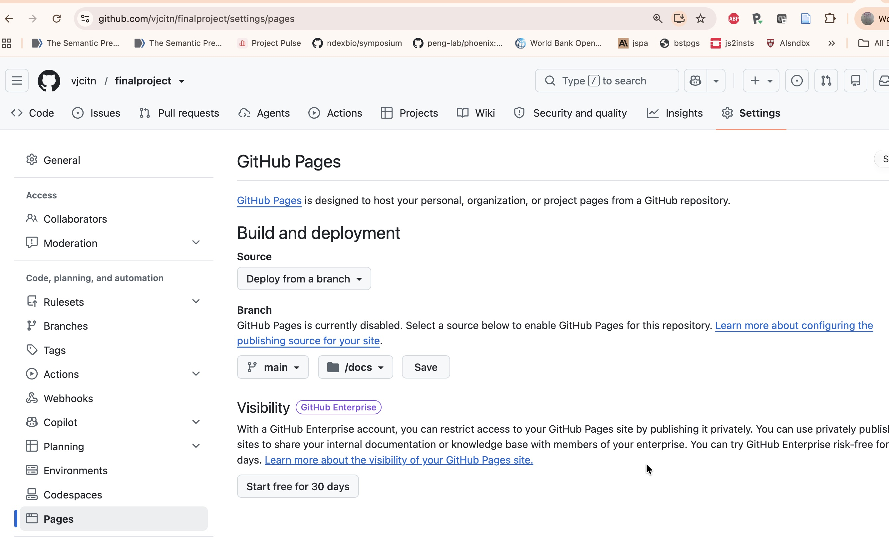

Introduction
The instructions indicate that your project should include description and analysis of two or more datasets of interest to you.
You will be working in the context of an R package, based on your fork of vjcitn/bst260project-template from github.com
Your R package will be defined to create a public web page using the pkgdown R package capabilities.
This document is provided to give you some ideas on how you can complete the project tasks.
Verifying your approach
Once you have forked the bst260project-template, you must
- rename the repository to “finalproject”
- make the repository public
- set the Pages configuration to publish from /docs on main branch (see images at the bottom of this document)
- change the DESCRIPTION file to reflect facts about your GitHub identity and site URL
Examples
NHANES
The options here are from 2025, but the product is not a set of written documents but a working web site. The content for this dataset can address any of these options:
Option 1: Age-Specific Health Analysis
Focus on one of these age groups with appropriate health outcomes:
- Ages 2-18: Growth patterns, childhood health indicators (note: different BMI/growth relationships than adults)
- Ages 19-40: Young adult health patterns, lifestyle factors
- Ages 40+: Disease risk factors, aging-related health patterns
Key considerations: Include important covariates (age, sex, race) and their interactions. Consult relevant literature for risk factors specific to your chosen age group and outcome.
Option 2: Statistical Methodology Focus
Instead of focusing on specific health outcomes, examine statistical approaches:
- Multiple imputation methods for handling missing data patterns
- Spline models for interpretable non-linear associations with continuous variables
- Survey methods for population-level estimates and inference
- Machine learning approaches (logistic regression, random forests) for data structure exploration
- Interactive applications using Shiny/Posit Connect for data exploration tools
Option 3: Missing Data Analysis
Investigate missing data patterns in NHANES:
- Understand why observations are missing for different variables
- Apply modern missing data methods
- Compare analytical approaches under different missingness assumptions
Option 4: Custom Research Question
Propose your own research question using NHANES data, subject to TF approval. Must demonstrate clear analytical approach and feasibility.
Important Data Considerations
Missing Values: Many NHANES variables have substantial missing data. Consider whether this affects your analysis or could be the focus of your study.
Outcome Variables: Examples include systolic blood pressure, diabetes risk, depression scores, sleep patterns, smoking status, BMI. Continuous outcomes may be easier to model initially.
Images for GitHub pages setup

